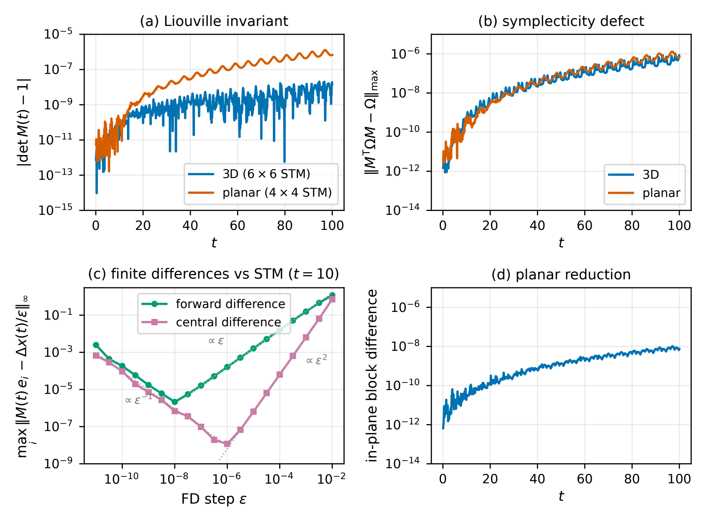

GPUと自動微分に対応するgalpy
銀河力学の研究で広く使われるPythonライブラリ「galpy」に、JAXとPyTorchを使う新しい計算経路が加わった。これにより、銀河の重力ポテンシャル、星の軌道、作用角変数などを、GPU上で計算したり、計算結果が入力の変化にどれほど敏感かを自動微分で求めたりできるようになる。大量の軌道をまとめて計算する場合など、著者が示した条件では、一つのCPUコアに対して10倍から最大10万倍程度の速度向上が得られた。
だが、この論文でさらに目を引くのは、その開発方法である。著者のJo Bovyは、新しい実装のコードのほぼすべてをAIコーディングエージェントが書いたと明記している。研究者は、何を実装するかを指示し、提出された変更を詳しくレビューし、数値計算の正しさを確かめる役割を担った。
独立した計算法で結果を確かめる
ソースコードが生成されたことと、科学的に使えるものができたことの間には、長い検証工程がある。著者はその過程を論文に記録している。既存のNumPy経路の出力が、意図的に変更した一部を除いて以前の版とバイト単位で一致することを、多数の数値に対するチェックサムで点検する。新しい計算経路にも共通のテストを通し、許容誤差を揃えて比較する。さらに、軌道を初期条件で微分した結果を、変分方程式や有限差分計算で得られる結果と突き合わせ、独立の方法が同じ答えへ収束することを調べる。


図を選ぶと原寸画像を開けます。
この図では、軌道計算の感度を複数の方法で計算し、差がどこまで小さくなるかを比べている。答えがもっともらしい形をしているという印象よりも、異なる計算法が同じ値を返すという検証が重要だ。図の左下の比較では、変分方程式の結果と中央差分の結果との差は、刻み幅を調整すると約１億分の１まで小さくなる。
高速化の幅は、計算する問題の規模やGPUの種類によって変わる。今回示されたのは、設計を明確にし、既存の実装を比較基準として残し、テストとレビューを積み上げれば、人間とAIが協力して大きな科学計算コードを更新できるという具体例である。
興味深いのは、人間の仕事が減ったというより、重心が移っていることだ。実装の細部を一行ずつ書く作業から、物理的な要求を定め、誤りを見つけられる検証方法を設計する作業へ。科学計算において何をもって「正しい」とするか。その基本的な問いが、AIを使うことで、むしろ以前より鮮明になっている。